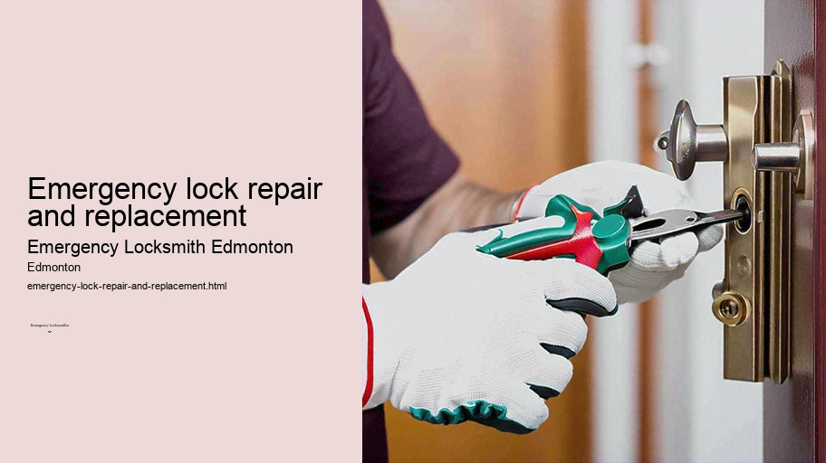

News
24/7 Emergency Locksmith Services
24/7 Emergency Locksmith Services
Emergency Locksmith Services
Residential lockout assistance
Automotive lockout services
Broken key extraction
Emergency lock repair and replacement
Commercial Locksmith Solutions in Edmonton
Commercial Locksmith Solutions in Edmonton
Highsecurity lock installations
Master key systems and rekeying services
Access control system integration
Panic bar installation and maintenance
Residential Locksmith Services in Edmonton
Residential Locksmith Services in Edmonton
Home lockout response
Rekeying existing locks for homes
Installation of new locks and deadbolts
Repairing or replacing residential locks
Automotive Locksmith Services in Edmonton
Automotive Locksmith Services in Edmonton
Car key duplication and replacement
Transponder key programming
Ignition repair and replacement services
Vehicle trunk opening
About Us

Emergency lock repair and replacement
Gate lock repair and installation Edmonton
Emergency Lock Repair and Replacement
Imagine returning home after a long day, only to find that your key won't turn in the lock.
Commercial Locksmith Solutions in Edmonton
.
Key duplication service Edmonton
UPVC door and window locks Edmonton
Or worse yet, you're woken up in the middle of the night by the sound of someone trying to force their way through your front door, damaging the lock in the process. These scenarios are not just frustrating but can also compromise your safety and security. It is at times like these when emergency lock repair and replacement services become invaluable.
Lock-related emergencies can arise due to various reasons: wear and tear from daily use, an attempted burglary leaving a lock damaged or dysfunctional, loss of keys leading to a necessary change of locks for safety reasons, or even sudden malfunctions that leave you either locked out or unable to secure your property. Whatever the cause may be, it's crucial that such situations are addressed promptly and effectively.
The first step when facing a lock emergency is not to panic. While it’s natural to feel anxious or vulnerable when security is compromised, clear thinking is essential for resolving the situation quickly. The immediate action should be contacting a reputable locksmith who offers emergency services around the clock. A skilled locksmith can assess your situation over the phone and provide an estimated time of arrival so you know help is on its way.
Once on-site, an experienced locksmith will evaluate whether your lock requires repair or if it needs replacement entirely.
Lock repair Edmonton
If repairable, they will have the necessary tools and expertise to fix issues ranging from jammed cylinders to broken keys stuck inside locks without causing additional damage to your door or property.
However, there are instances where repairing may not be possible due to extensive damage or outdated locking mechanisms which no longer meet current security standards.
Intercom system installation Edmonton
Peephole installation Edmonton
In such cases, replacing the entire locking system becomes imperative. A competent locksmith will guide you through selecting a suitable replacement that aligns with both your security needs and budget considerations while ensuring compliance with insurance requirements where applicable.
Gate lock repair and installation Edmonton
Selecting high-quality locks during replacement can significantly enhance security measures for any premises - residential or commercial alike. From traditional deadbolts to modern smart locks offering advanced features like biometric access control or remote operation via smartphones; options abound depending on individual preferences and technological inclination.
Installation of new locks isn't merely about placing a new device into a door; it involves meticulous alignment with existing latches and strike plates as well as adjustments for smooth operation while maintaining integrity against forced entry attempts. Trustworthy locksmiths understand this balance between ease of use for residents while deterring unauthorized access.
Moreover, professional locksmiths recognize that emergencies don’t adhere to regular business hours; therefore most offer 24/7 service so no one has left stranded outside their home or office regardless of what time disaster strikes – whether late at night or early morning before normal work hours commence.
In conclusion, dealing with an emergency involving damaged or malfunctioning locks requires swift action coupled with professional handling by qualified individuals adept at managing stressful situations diligently without exacerbating them further through errors in judgement made under pressure.
Emergencies pertaining specifically to lock repair and replacements highlight our inherent need for safety within personal spaces we inhabit every day – they underscore importance expert advice has alongside technical proficiency as part bringing peace mind back those affected unexpected circumstances disrupting tranquillity previously taken granted within own four walls sanctuary called home workplace alike.
Licensed locksmith Edmonton
Mailbox locks and keys Edmonton
Lock rekeying Edmonton
Deadbolt installation Edmonton
Check our other pages :
24/7 Emergency Locksmith Services
Automotive lockout services
Highsecurity lock installations
Emergency Locksmith Services
Home lockout response
Frequently Asked Questions
How quickly can an emergency locksmith in Edmonton arrive to address a lock repair or replacement?
Emergency locksmiths in Edmonton typically offer fast response times, often aiming to arrive within 30 minutes to an hour depending on your location and the time of day.
Are emergency locksmiths available 24/7 in Edmonton?
Yes, most emergency locksmith services in Edmonton are available 24 hours a day, 7 days a week, including holidays to address urgent lock-related issues.
Can an emergency locksmith handle high-security locks and smart lock systems?
Most professional emergency locksmiths are trained to handle a wide range of locks, including high-security locks and modern smart lock systems. However, its best to confirm this with the service provider before they dispatch a technician.
What should I expect in terms of cost for emergency lock repair or replacement services in Edmonton?
Costs can vary based on the type of service needed (repair vs. replacement), the time of day (after-hours may incur additional fees), and the complexity of the lock mechanism. Its recommended to ask for an estimate upfront when you call for service.
Is it possible for an emergency locksmith to perform non-destructive entry if Im locked out?
Many skilled emergency locksmiths prioritize non-destructive entry methods whenever possible. However, if your lock is severely damaged or if there is another complicating factor, they may need to drill the lock. Discuss this with your locksmith beforehand so that you know what to expect.